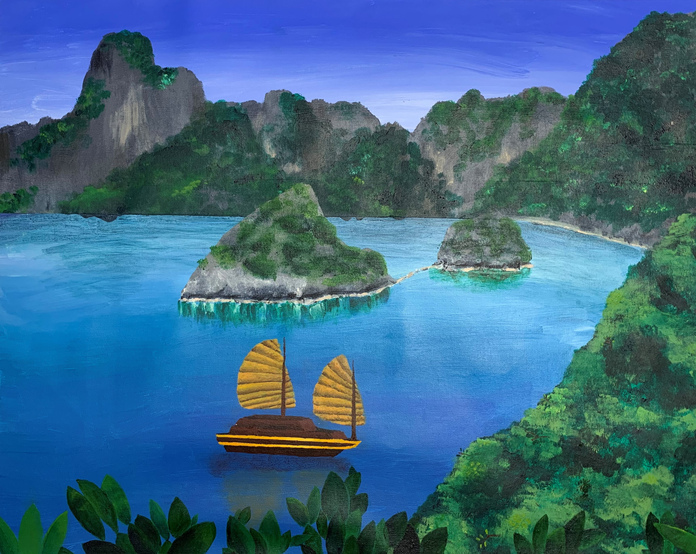
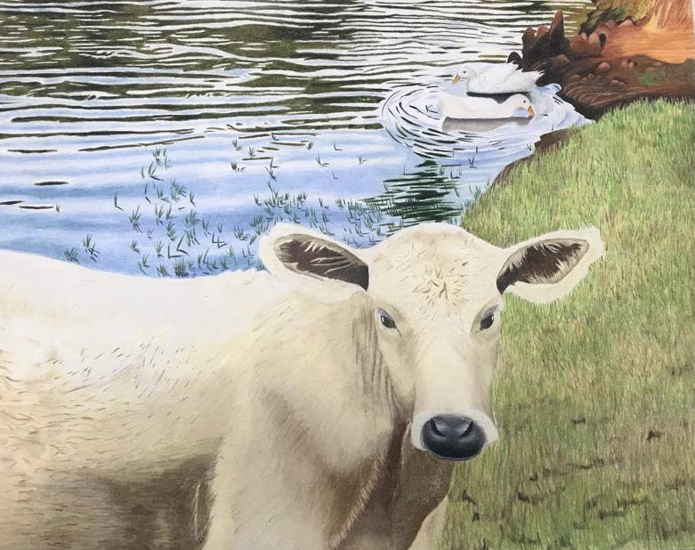

This is a painting I made for a NASA competition encouraging artists to make a piece that was “Drawn to Explore”. My take on this theme was to paint an artist of the future making sketches on a human mission to inhabit Mars.
This is a piece I painted of a specific place in Southeast Asia. I love seeing the beauty in all different places of the world, whether it be a sea, a desert, a city, or a jungle, but this particular bit of scenery caught my eye.
This color pencil piece named Steer Away from the Water was a finalist at the Houston Rodeo Art Competion. It is based off of a photo I once took of a cow grazing in a field near a pond close to my home.